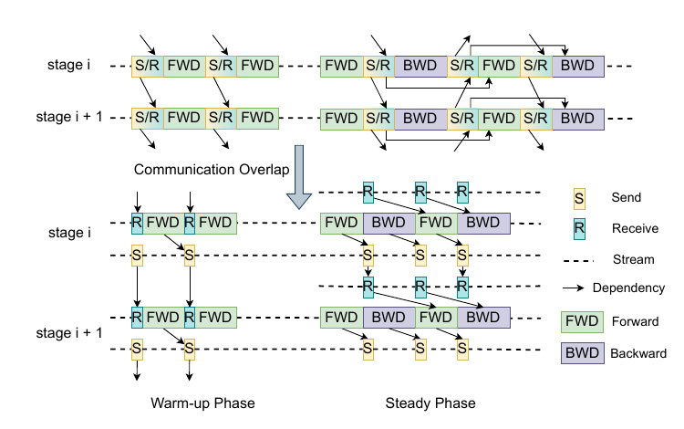
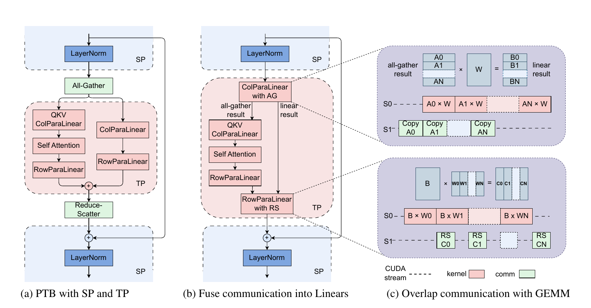
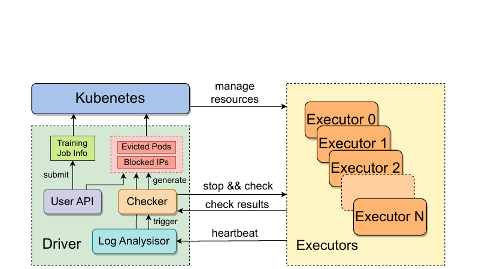
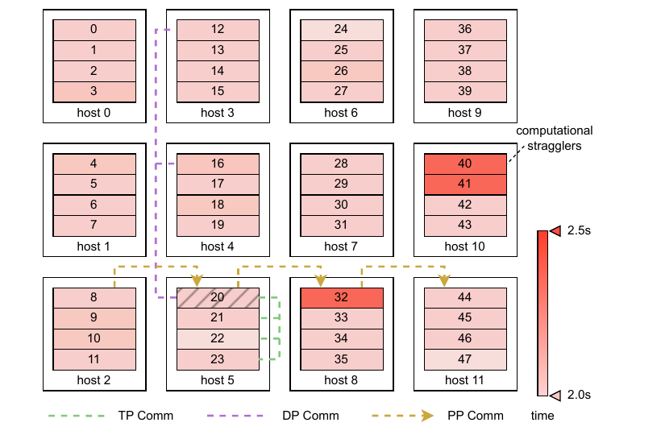
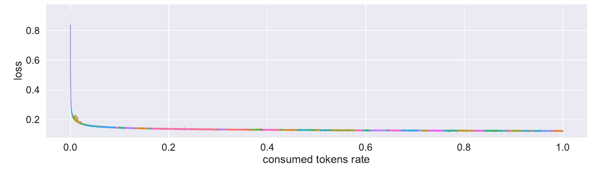

MegaScale: Scaling Large Language Model Training to More Than 10,000 GPUs
MegaScale 的核心是把萬卡同步 LLM 訓練視為一個跨層 critical-path 與穩定性問題：以 3D parallelism 專屬的通訊重疊、資料與網路調校、拓樸感知觀測及快速容錯共同維持效率，並在 175B 模型、12,288 張 GPU 的指定條件下達到 55.2% MFU，相對論文採用的 Megatron-LM 基線為 1.34×。 §6.1 · PDF p.11（論文 p.754）· Table 2
文章目錄
3D 平行、MFU、Critical Path 與故障域
最小前置概念
| 概念 | 在本文扮演的角色 | 稍後會用在哪裡 |
|---|---|---|
| 同步訓練與最慢 rank | collective 或 pipeline 相依讓所有參與者等待尚未抵達的 rank。 | 解釋 straggler、MFU 漂移、故障連鎖與跨 rank trace。 |
| 資料平行（DP） | ZeRO stage 2 將 gradients/optimizer states sharding；每個 chunk 需要 all-gather parameters 與 reduce-scatter gradients。 | 解釋 chunk-level overlap 與最後一個 reduce-scatter 為何會暴露。 |
| 管線平行（PP） | layers 分 stage，micro-batches 依 interleaved 1F1B 流動；warm-up/cool-down 產生 bubble。 | 解釋 send/receive 解耦與 LAMB 放大 batch 的作用。 |
| 張量／序列平行（TP/SP） | 單一 operator 分卡；SP 降 activation memory，但在 SP↔TP 邊界引入 all-gather/reduce-scatter。 | 解釋把 collective 融入 parallel linear 並切碎 GEMM。 |
| Model FLOPs Utilization（MFU） | 觀測吞吐相對於理論 peak FLOPs 的利用率；固定模型與 token 目標時可對應訓練時間。 | 是 scalability、ablation 與 straggler 的共同指標。 |
| 故障 vs. straggler | 故障使 job error/hang；straggler 仍運作但拖慢同步 critical path。 | 前者走自動診斷與 restart，後者需細粒度 observability。 |
論文採用 3D parallelism，傾向把高頻寬需求的 TP 留在單機，DP/PP 跨節點，並優先安排 DP groups 以減少跨 mini-pod 通訊。 §2 · PDF pp.3–4（論文 pp.746–747）· Figures 1–2
有了這些背景，下一個問題是：通訊泡泡、啟動風暴與長尾故障如何吞掉有效訓練時間。
通訊泡泡、啟動風暴與長尾故障如何吞掉有效訓練時間
症狀 → 根因 → 要求
| 可見症狀 | 根本機制／既有缺口 | 由此導出的設計要求 |
|---|---|---|
| GPU 增加，MFU 下降。 | 固定 global batch 下，每卡計算減少，communication/computation ratio 上升；collectives 落在 critical path。 | 依 DP、PP、TP/SP 各自相依關係做 semantic-aware overlap，而非只做通用 backward overlap。 |
| 每 step 開頭 GPU 等資料。 | 每張 GPU 各自從 disk 讀相同 TP input，競爭 read bandwidth；preprocessing 被串在 critical path。 | 提前處理下一 step，且每機只讀一次、以 shared memory 與 GPU copy fan-out。 |
| 啟動／重啟在大規模變慢。 | 單執行緒 blocking TCPStore 與每 group global barrier，使初始化近似 \(O(n^2)\)。 | 非阻塞 metadata store，消除不必要的 global barriers，將複雜度降至 \(O(n)\)。 |
| all-to-all congestion、PFC 與 HoL blocking。 | ECMP hash collision、跨多 hop traffic、預設 DCQCN 在規模下引發過多 PFC；link flap 又可能過早 timeout。 | 拓樸/placement 協同、multi-rail、RTT+ECN congestion control 與合理 retransmit timeout。 |
| 故障頻繁且錯誤訊息淹沒根因。 | 單卡 hang 可造成相依 ranks 連鎖 NCCL timeout；表層狀態只看到全域 blockage。 | 持續蒐集 heartbeat/log/RDMA signal，快速 self-check、隔離節點、補資源、由近端 checkpoint 恢復。 |
| 同設定各 run MFU 不一致，且隨時間下降。 | 約 0.5% 慢機與 critical-path code jitter 被同步放大；單卡 GEMM benchmark 看不出跨 rank 等待。 | 低開銷 CUDA event、system-wide heatmap/timeline 與 3D dependency view。 |
作者主張 MegaScale 的成功標準同時包含 training efficiency 與長時間維持效率的 training stability；在萬卡尺度，兩者不能分開最佳化。 §1 · PDF pp.2–3（論文 pp.745–746）
| 工作脈絡 | 主要處理層 | MegaScale 如何承接 | 關鍵差異 |
|---|---|---|---|
| Megatron-LM | 模型平行、3D parallel training 與 operator stack。 | 作為直接 baseline 與實作起點，保留 TP/PP/DP 基礎。 | 加入模型/optimizer co-design、三類 overlap、data/control plane、network 與 production reliability 全棧；比較僅對特定舊 commit。 |
| ZeRO / FSDP | 透過 sharding 降低 parameters、gradients、optimizer states 的單卡記憶體。 | 採 ZeRO stage 2 類 DP，將 parameter all-gather 與 gradient reduce-scatter 依 model chunks 排程。 | 貢獻重點不是再發明 sharding，而是依計算相依把 collectives 預取、排序與重疊。 |
| GPipe / PipeDream 類 pipeline systems | layers 分 stages，以 micro-batches 降 pipeline bubble。 | 採 interleaved 1F1B，再拆分 send/receive 並以較大 batch 改善 bubble。 | MegaScale 避免用 stale weights 改變同步訓練語義；代價是 bubble 仍須靠 schedule 與 workload co-design 處理。 |
| 通用 communication schedulers | 依優先序或依賴把 collective 與 backpropagation 重疊。 | 同樣把通訊移離 critical path。 | 依 DP、PP、TP/SP 的不同 semantics 各自改執行圖，而不是把所有 collective 當成同類工作。 |
| Pingmesh、EverFlow、LossRadar、NetBouncer、Hostping | 資料中心網路的 path probing、loss/blackhole/host diagnosis。 | heartbeat、RDMA metrics 與連線測試借鏡 production network diagnosis。 | MegaScale 再把網路訊號對齊 GPU rank 與 TP/PP/DP dependency，面向單一超大同步 job 的因果追蹤。 |
| Checkpoint/restart 與 proactive migration | 故障後恢復，或在明確故障前搬移工作。 | 以 host-memory staging、背景 HDFS write、分區讀取+broadcast 降低 checkpoint/restore critical path。 | 本文以 reactive recovery 為主；對慢機則用 observability 找出並替換，未評估預測式 migration 或 replica training。 |
§7 · PDF pp.14–15（論文 pp.757–758）
分析 MegaScale 的新穎性不在每個零件皆首創：3D parallelism、ZeRO、FlashAttention-2、LAMB、Clos 與 checkpoint 都有前身。影響力來自把模型演算法、runtime、network control plane 與運維 telemetry 對齊到同一個萬卡 critical path，並以真實長跑證明整合能運作。這是 system integration/co-design 型貢獻。
問題的限制已經清楚；接著要抓住作者最關鍵的轉念。
12,288 張 GPU：跑得快只是起點，跑得完才是系統
問題與根因
單一 LLM job 佔用上萬張 GPU、持續數週。同步執行使一個暴露在 critical path 的 collective、一個資料載入停頓、一張慢卡或一次 link flap，都能讓所有 ranks 等待；規模同時提高通訊比例、故障發生率與人工定位難度。 §1 · PDF pp.2–3（論文 pp.745–746）
兩個統攝原則
效率
Algorithm–system co-design：模型 block、optimizer、DP/PP/TP/SP、operators、data pipeline、collective initialization 與 network 一起最佳化。
穩定
In-depth observability：heartbeat、logs、RDMA counters、毫秒級監測、跨 rank CUDA events 與 3D dependency view 共同定位深層故障與 straggler。
最強證據與邊界
實驗事實 175B strong-scaling 實驗在 12,288 張 NVIDIA Ampere GPU、TP=8、PP=8、batch=6,144、sequence length=2,048 下，MegaScale 為 6.34 s/iteration、1.984M tokens/s、55.2% MFU；Megatron-LM 為 8.57 s、1.467M tokens/s、41.2% MFU。 §6.1 · PDF pp.10–11（論文 pp.753–754）· Tables 1–2
實驗事實 一個未揭露細節的 production model 在超過 10,000 張 GPU 上訓練數週、處理 multi-trillion tokens；Figure 11 以不同顏色標示超過 100 次 restart，loss 仍持續下降，且作者報告超過 90% 軟硬體 faults 可自動辨識與修復。 §6.2 · PDF p.12（論文 p.755）· Figure 11
分析 1.34× 是 55.2/41.2 的相對比值；絕對差是 14.0 個 MFU 百分點。結果證明的是這套整合 stack 在作者 Ampere cluster 與該工作負載的效能，不等同於每一個元件都有獨立 10K-GPU 因果證據。
直覺成立後，再沿著一次完整執行看它如何落成系統。
把通訊藏進計算，並把故障變成可恢復的控制迴路
一個 training job 從啟動到故障恢復
- 配置 3D topology：將 GPU ranks 組成 TP、PP、DP groups；TP 優先留在 node 內，資料密集 ranks 儘量安排在同 ToR。
- 快速建立 collectives：以非阻塞 Redis 取代 blocking TCPStore，依序建立 groups 以去除每組 global barrier；完成後進入迭代。
- 準備下一批資料：本 step 仍在 gradient synchronization 時，CPU 非同步預處理下一 step。每台機器只設一個 loader 讀 disk/shared memory，再由各 GPU worker 複製相同 TP input。
- 執行一個 step：parallel transformer block 讓 attention 與 MLP 可並行；sliding-window attention、FlashAttention-2、fused LayerNorm/GeLU 減少 operator 成本；interleaved 1F1B 推進 micro-batches。
- 把通訊搬離 critical path：DP 以 model chunk 為粒度預取 all-gather、backward 後立即 reduce-scatter；PP 解耦 send/receive；TP/SP 把 all-gather、reduce-scatter 融入較大的 FFN linears，再把 GEMM 切片與 communication pipelining。
- 跨機傳輸：三層 Clos-like、multi-rail 200G NIC、placement 與路由共同減少 ECMP collision；自訂 congestion control 合併 RTT 與 ECN，並調 retransmit 以容忍短暫 link flap。
- 持續觀測：executor daemon 上報 heartbeat、process status、stdout/stderr 與 RDMA counters；CUDA events 再提供 rank-level compute/communication spans，形成 heatmap、timeline 與 3D dependency view。
- 故障閉環：driver 偵測異常或 heartbeat timeout → 全域暫停 → 輕量 self-check → block IP/evict Pod → Kubernetes 補健康 node → 從最近 checkpoint 繼續。
效率路徑：每種 parallelism 都有不同可藏區間
Data parallelism
ZeRO-style DP 的 all-gather 必須在 chunk forward 前完成，reduce-scatter 則在 chunk backward 後可開始。MegaScale 將首個 all-gather 提前到 iteration 開頭，與 data loading 重疊；其餘 collectives 依下游 computation 的需求順序排 priority。第一個 all-gather 與最後一個 reduce-scatter 最難完全隱藏，設計不是宣稱通訊歸零。 §3.2 · PDF p.5（論文 p.748）
Pipeline parallelism
在 warm-up，forward 只依賴前一個 receive；若 send/receive 綁成一個同步操作，較慢的一側會阻塞另一側。MegaScale 將它們拆開，用獨立 stream 非同步發送；steady phase 的相鄰 send/receive 也可和 forward/backward 穿插。 §3.2 · PDF p.6（論文 p.749）· Figure 4
{kind=link}

Tensor / sequence parallelism
SP 與 TP 的轉換要求 all-gather/reduce-scatter，原本在 critical path。系統把兩個 collective 融入 FFN path 的 column/row parallel linears，因 FFN GEMM 較大、較能遮住傳輸；再把 GEMM 切成 chunks，以 compute stream 與 communication stream 做 producer–consumer pipeline。 §3.2 · PDF pp.5–6（論文 pp.748–749）· Figure 3
{kind=link}

資料、啟動與網路不是旁枝
資料預處理提前、per-node tree loading、collective initialization 與 network tuning 都在消除 GPU 閒置來源。初始化的 staged result 尤其清楚：2,048 GPU 的 Megatron-LM 約 1,047 s；換 Redis 後 361 s；再消除 global barriers 後低於 5 s，10K+ GPU 低於 30 s。 §3.4–3.5 · PDF pp.6–7（論文 pp.749–750）
穩定路徑：正常運行也要能被診斷
常見顯式 error 由 heartbeat、log 與 self-check 自動處理；driver 暫停全域 job、隔離異常 IP／Pod，再交給 Kubernetes 補入健康節點，將單點故障收斂成可重複的恢復流程。 §4 · PDF pp.7–8（論文 pp.750–751）· Figure 5
{kind=link}

概率性慢機或全域 timeout 則由 CUDA-event heatmap 找尾端 ranks，再沿 TP／PP／DP logical topology 追相依，避免把所有等待中的 ranks 都誤判成根因。 §5 · PDF pp.9–10（論文 pp.752–753）· Figure 7
{kind=link}

最後，checkpoint 採兩階段：GPU state 先經 pinned host memory 快速脫離 critical path，再背景寫 HDFS；restore 時每個共享 partition 只由一個 worker 讀 HDFS，再 broadcast 給相同狀態的 workers。 §4 · PDF pp.8–9（論文 pp.751–752）
分析 這套方法可視為兩個控制迴路：毫秒到 step 級的效率迴路把 communication/data stalls 藏到 compute 後面；分鐘級的可靠性迴路把 anomaly 轉成定位、隔離與 restart。前者提高峰值 MFU，後者保護數週工作的有效訓練時間。
MFU 如何把吞吐轉成硬體利用率
\(G\) 是 GPU 數。固定模型、precision 與 FLOP counting 時，較高 MFU 表示更多峰值算力被有效訓練工作使用；跨論文比較則會受峰值規格與 FLOP 定義影響。
對固定 token 目標，另有 \(T_{train}=N_{tokens}/\text{throughput}\)。Table 2 的 12,288-GPU MegaScale throughput 為 1.984M tokens/s，訓練 300B tokens 對應約 1.75 天；同表 Megatron-LM 為 1.467M tokens/s、約 2.37 天。 §6.1 · PDF p.11（論文 p.754）· Table 2
3D parallelism 本質上是 rank topology
\(D,P,T\) 分別是 data、pipeline、tensor parallel degree。175B 設定 \(T=8,P=8\)；若一 rank 對應一 GPU，12,288 GPU 對應 \(D=192\)。這是依 Table 1 與 3D 分解得到的分析值，論文未直接列出 192。
增大 \(G\) 且固定 global batch 時，每 GPU 的 compute 下降，但跨 ranks 的 synchronization 不會同比消失，因此 MFU 通常隨 strong scaling 下滑；這也是 overlap 在大規模更重要、卻更難完全遮蔽的原因。
模型 block 的等式也會改變執行圖
上式是論文列出的 serialized formulation。
\[ y=x+\mathrm{MLP}(\mathrm{LN}(x))+\mathrm{Attention}(\mathrm{LN}(x)). \]Parallel transformer block 讓 MLP 與 attention 可並行，但它改變了模型計算圖，不只是 schedule；作者以 13B convergence microbenchmark 檢查影響。
Initialization 的複雜度如何改變
若每個 communication group 建立後都觸發 global barrier，group 數與參與 processes 同時隨規模成長，作者將 naive 行為概括為 \(O(n^2)\)。重新安排 group initialization、去除不必要 barrier 後降為 \(O(n)\)。這是 control-plane cost，不是單一步驟 collective 的 data-plane 複雜度。 §3.5 · PDF pp.6–7（論文 pp.749–750）
分析 論文未給一個能加總 compute、DP/PP/TP traffic、network contention 與 straggler tail 的完整解析模型；公式主要用來定義 metric 與解釋方向，元件收益仍依實驗與 production cases 建立。
方法看似合理，真正的問題是：實驗有沒有把這條因果鏈撐起來？
175B／530B Scaling、累積消融與續訓軌跡
Claim–test pairs：每個主張由哪個測試回答？
| 主張 | 測試與控制條件 | 判準 | 主要 caveat |
|---|---|---|---|
| C1：MegaScale 能改善 175B strong scaling | 固定 global batch 6,144 與 300B-token 目標，GPU 由 3,072 擴至 12,288；sequence 2,048、TP=8、PP=8。以同 batch 的 Megatron-LM 作基線。 | iteration time、tokens/s、300B tokens 預估天數、MFU 與 PFLOPS。 | 沒有 repetitions、error bars 或顯著性；baseline 是 2023-01-11 commit。 §6.1 · PDF pp.10–11（論文 pp.753–754）· Tables 1–2 |
| C2：530B 可弱縮放至 11,200 GPUs | 2,240、4,480、11,200 GPUs；batch 隨 GPU 數增加，並相應調 learning rate；TP=8、PP=35。 | 若每卡工作量大致維持，MFU 應跨規模保持；比較 MegaScale 與 Megatron-LM。 | 不是 fixed-batch strong scaling；batch 與 learning rate 一起改變。 §6.1 · PDF p.11（論文 p.754）· Figure 9 |
| C3：co-design 元件共同貢獻效率 | 175B、256 GPUs，從 Megatron-LM 開始依序加入 parallel transformer block、sliding-window attention、TP/PP/DP overlap、operators、miscellaneous、LAMB。 | 觀察累積 MFU 是否由 47.7% 上升。 | 不是單因子消融；順序 interaction 未拆解，最後一列把 batch 放大 3×。 §6.3 · PDF p.12（論文 p.755）· Table 3 |
| C4：演算法改動不破壞 convergence | 資源受限下改用 13B 模型：PTB+SWA 對 baseline 訓練超過 100B tokens；LAMB 4× batch 對 Adam 1× batch 至約 250B tokens。 | training-loss curves 應相近、最後達到相同 loss。 | 是 13B proxy，不是 175B/530B；只呈 training loss，沒有 downstream quality 或統計區間。 §6.1 · PDF p.12（論文 p.755）· Figure 10 |
| C5：系統能長期承受萬卡故障 | 一個未具名、數千億參數 production model，在超過 10,000 GPUs 上跑數週、跨 multi-trillion tokens；以 normalized loss/token-rate 與 restart 色段呈現。 | restart 後 loss 是否續降；自動處理率、診斷時間與 effective training time rate。 | 模型、精確卡數、資料、故障總數/分布與原始時間軸未公開。 §6.2 · PDF p.12（論文 p.755）· Figure 11 |
| C6：observability 能定位慢機與 jitter | 以 rank-level CUDA events、heatmap/timeline、3D dependencies 檢查不同 production incidents，再移除慢 hosts 或問題程式碼。 | 修正前後 MFU 與跨 iteration timing 是否回復。 | 案例式 before/after，未報 control group、樣本數或監測開銷。 §6.4 · PDF p.13（論文 p.756）· Figure 12 |
硬體、模型與軟體條件
- Cluster：截至 2023 年 9 月，作者的最大 production cluster 超過 10,000 張 NVIDIA Ampere GPUs；每台 server 以八張 200 Gb/s NIC 連到八個不同 switches，fabric 為三層、1:1 non-oversubscribed Clos-like topology。論文沒有揭露 Ampere 的確切 SKU、GPU memory 或 server CPU。 §3.6、§6 · PDF pp.7、10（論文 pp.750、753）
- 175B：96 layers、hidden size 12,288、128 heads、TP=8、PP=8、interleaved stages=6；3,072–12,288-GPU 主結果的 global batch 固定為 6,144。
- 530B：105 layers、hidden size 20,480、160 heads、TP=8、PP=35、interleaved stages=3；弱縮放時 batch 隨卡數增加。
- 共同模型條件：sequence length 2,048、vocabulary 64K。基線是 Megatron-LM commit
285068c8（2023-01-11），各比較使用相同 batch size。 §6 · PDF p.10（論文 p.753）· Table 1 - 未揭露：CUDA、PyTorch、NCCL 與 precision 的確切版本/設定；MFU 所用 Ampere peak 值與完整 FLOP-count convention；每個數字的 run 次數。
分析 論文把 scalability、component attribution、convergence 與 production stability 分成不同測試，方向正確；但各自控制強度不同。Table 2 最適合回答固定工作量的端到端效率，Figure 9 回答 capacity scaling，Table 3 只能回答「這個加入順序的 stack 最終可達多少」，Figure 11 則是 operational evidence，而不是受控可靠度實驗。
175B fixed-batch strong scaling
| GPUs | 系統 | iteration | 吞吐（K tok/s） | 300B tokens | MFU | PFLOPS |
|---|---|---|---|---|---|---|
| 3,072 | Megatron-LM | 29.02 s | 433.6 | 8.01 days | 48.7% | 466.8 |
| MegaScale | 23.66 s | 531.9 | 6.53 days | 59.1%（1.21×） | 566.5 | |
| 6,144 | Megatron-LM | 14.78 s | 851.6 | 4.08 days | 47.8% | 916.3 |
| MegaScale | 12.21 s | 1,030.9 | 3.37 days | 57.3%（1.19×） | 1,098.4 | |
| 8,192 | Megatron-LM | 12.24 s | 1,027.9 | 3.38 days | 43.3% | 1,106.7 |
| MegaScale | 9.56 s | 1,315.6 | 2.64 days | 54.9%（1.26×） | 1,400.6 | |
| 12,288 | Megatron-LM | 8.57 s | 1,466.8 | 2.37 days | 41.2% | 1,579.5 |
| MegaScale | 6.34 s | 1,984.0 | 1.75 days | 55.2%（1.34×） | 2,166.3 |
§6.1 · PDF p.11（論文 p.754）· Table 2
實驗事實 主結論的完整條件是：175B、12,288 Ampere GPUs、TP=8、PP=8、batch=6,144、sequence=2,048。MegaScale 的 55.2% MFU 相對基線 41.2% 為 1.34×，絕對差是 +14.0 percentage points；吞吐比為 1.9840M/1.4668M≈1.35×，300B-token 時間由 2.37 降至 1.75 天。 §6.1 · PDF p.11（論文 p.754）· Table 2
分析 MegaScale 從 3,072 擴到 12,288 GPUs 時，吞吐增加約 3.73×（理想為 4×），MFU 由 59.1% 降至 55.2%；Megatron-LM 同段吞吐只增約 3.38×，MFU 由 48.7% 降至 41.2%。因此證據不只顯示單點較快，也顯示 stack 把規模擴大造成的利用率下滑控制得較小；但這是依表中數字計算，非作者另報的 scaling-efficiency metric。
530B weak scaling
| GPUs | Megatron-LM MFU | MegaScale MFU | 絕對差 |
|---|---|---|---|
| 2,240 | 49.2% | 54.3% | +5.1 points |
| 4,480 | 48.8% | 54.1% | +5.3 points |
| 11,200 | 48.2% | 54.3% | +6.1 points |
每卡負載大致保持時，MegaScale 的 MFU 幾乎持平於 54.1–54.3%，而基線略降；這支持 530B capacity 可延伸至 11,200 GPUs。它不能替代固定 global batch 的強縮放證據。 §6.1 · PDF p.11（論文 p.754）· Figure 9
Control plane 與 production stability
實驗事實 2,048 GPUs 的 Megatron-LM communication-group initialization 約 1,047 s；換成非阻塞 Redis 後約 361 s；進一步去除 group 間 global barriers 後低於 5 s。作者另報在超過 10,000 GPUs 時低於 30 s。 §3.5 · PDF pp.6–7（論文 pp.749–750）
實驗事實 production run 經歷超過 100 次 restart；作者報告超過 90% faults 可自動偵測與修復，平均 detection+diagnosis 低於 10 分鐘，通常可在 15 分鐘內追平 crash 前進度，effective training time rate 超過 90%。 §6.2 · PDF p.12（論文 p.755）· Figure 11
{kind=link}

分析 初始化數字直接測到 control-plane 改造；production 數字則證明「真實 job 能持續推進」。後者沒有 recovery-time 分布、未自動修復的 10% 類型或 monitoring/checkpoint overhead，因此較適合視為 field evidence，而非可重現的 reliability benchmark。
175B、256-GPU 累積式 ablation
| 累積設定 | MFU | 相對 baseline | 相鄰列邊際差 |
|---|---|---|---|
| 1. Megatron-LM baseline | 47.7% | — | — |
| 2. + Parallel Transformer Block | 52.3% | +4.6 points | +4.6 |
| 3. + Sliding Window Attention | 53.3% | +5.6 points | +1.0 |
| 4. + TP overlap | 55.5% | +7.8 points | +2.2 |
| 5. + PP overlap | 58.0% | +10.3 points | +2.5 |
| 6. + DP overlap | 59.5% | +11.8 points | +1.5 |
| 7. + Efficient operators | 61.2% | +13.5 points | +1.7 |
| 8. + Miscellaneous | 62.3% | +14.6 points | +1.1 |
| 9. + LAMB，batch size ×3 | 65.3% | +17.6 points | +3.0 |
§6.3 · PDF p.12（論文 p.755）· Table 3
該表能說什麼、不能說什麼
- 能說：按照作者選定的組合與加入順序，MFU 由 47.7% 累積到 65.3%；三種 parallelism 的 overlap 加入後，各自的相鄰列都有正向差值。
- 不能說：相鄰差值不是 Shapley value 或單變因效果；後加入的元件可能依賴前面的模型圖、chunking 與 scheduling，順序改變時貢獻可能不同。
- batch caveat：Table 3 caption 稱 batch size 256，但 LAMB 列明示 BS ×3，即該列改為 768；最後 3.0 points 混合 optimizer 與更大 batch 對 pipeline bubble 的影響，不能和前列視為完全同條件。
- 網路 caveat：作者說 networking optimizations 同時套用 MegaScale 與 baseline，因此此表沒有估計 topology/congestion-control 的增益。
- 缺少的消融：data pipeline、Redis/group initialization、checkpoint、監測 overhead、slow-node detector 與 congestion control 都沒有獨立 quantitative ablation；部分被收在未拆解的 miscellaneous，部分只以案例或操作數字呈現。
Convergence sensitivity
實驗事實 13B microbenchmark 中，parallel transformer block + sliding-window attention 與 baseline 在超過 100B tokens 的 training-loss curve 接近；LAMB 以 4× batch、Adam 以 1× batch，兩者約在 250B tokens 達到相同 loss。 §6.1 · PDF p.12（論文 p.755）· Figure 10
分析 這排除了「13B 上立即發散或明顯劣化」的風險，卻沒有驗證 175B/530B、下游能力或 final checkpoint 等價。尤其 SWA 的 window size、LAMB 的超參數與多次 seed variation 未充分揭露，不能把 13B 曲線當成所有規模的品質保證。
數據回答了部分問題；剩下的是適用邊界與仍未被證明的部分。
峰值 MFU 不等於有效訓練率：證據與重現邊界
優點
- 規模與真實性兼具：受控評估涵蓋 175B/530B、最高 12,288/11,200 GPUs，另有跑數週、multi-trillion-token 的 production record。
- 真正的 full-stack 因果鏈：模型圖、optimizer、DP/PP/TP scheduling、operators、data、collective setup、fabric、failure recovery 與 observability 都對應到「GPU 為何閒置」或「job 為何停滯」。
- 效率與穩定性同一尺度思考：峰值 MFU 若因慢機逐步下降或頻繁故障而不可維持，便不算成功；論文把 steady-state throughput 與 weeks-long effective time 都納入。
- 可診斷性不是事後工具：跨 ranks 的 CUDA event、logical dependency 與 network signal 被設計成控制迴路的一部分，能把同步放大的症狀追到源頭。
證據與可重現性限制
- 專有環境：production 模型、資料、cluster 細節與故障分布未公開；論文只表示計畫把部分設計開源到 veScale，無法由本文重建完整系統。
- 基線時點：Megatron-LM 基於 2023-01-11 commit；未和同時期其他 production stacks 或後來版本比較，1.34× 不應視為對「所有既有框架」的普遍差距。
- 實驗統計不足：exact Ampere SKU、precision/software versions、run count、error bars 與 MFU peak/FLOP convention 未完整揭露，難以估計 variance 或精確復現。
- 歸因受限：Table 3 是累積式且末列改 batch；network、data pipeline、checkpoint、monitoring 與 recovery 元件缺少獨立 ablation。
- 品質驗證縮小：convergence 只在 13B proxy 看 training loss；沒有 175B/530B 或 production model 的 downstream/final-quality 指標。
- 可靠度只報摘要值：沒有 failure taxonomy、MTBF、recovery-time quantiles、checkpoint interval/size，Figure 11 又使用 normalized axes，無法推導長尾停機成本。
部署風險
- 拓樸綁定：multi-rail、same-ToR placement 與自訂 RTT+ECN congestion control 依賴特定 Broadcom/RDMA fabric；其他拓樸未驗證可攜性。
- Overlap 可能互相競爭：高 priority communication、GEMM slicing 與多 streams 會爭 SM、memory bandwidth、NIC/PCIe；模型 shape 或硬體改變時需重新調校。
- 大 batch 改變 optimization：LAMB 降低 PP bubble 也改變統計效率與超參數需求；吞吐收益不可自動等同於更快達到同等模型品質。
- 平均值掩蓋尾端：平均診斷低於 10 分鐘並不約束 P99；未自動修復的少數事件可能主導 weeks-long run 的人工成本。
分析 最可靠的可移植結論是「逐層找出同步 critical path，讓 observability 使用相同的 rank dependency graph」；最不應直接外推的則是 55.2% MFU 與 1.34×，因為它們依賴作者的模型、Ampere peak 定義、network、baseline commit 與調校。
從 MegaScale 可以延伸哪些系統設計
三張圖必須對齊：execution、fabric、telemetry
分析 Execution graph 說明哪些 DP/PP/TP collective 阻塞下一個 kernel；physical topology 說明 bytes 經過哪些 NIC/ToR/links；telemetry graph 則必須把異常重新映回同一組 ranks。只有三者有共同識別碼與時間軸，才能從「某 collective 變慢」追到「哪台 host、哪條 link、哪個 process」；MegaScale 的 3D dependency view 是這個原則的具體版本。
峰值 MFU 與有效訓練時間是相乘關係
這不是論文定義的新 metric，而是閱讀本文的分析框架：overlap 提升 peak throughput；自動恢復提高 healthy-time ratio；快速 checkpoint 減少 crash 後重做，使 useful-work ratio 上升。
例如只追 55.2% MFU 而忽略 restart，可能在數週尺度輸掉；反過來，只提升 availability 而讓慢機長期拖住同步步驟，也會使名義上的「健康時間」產出很少。本文最值得 cluster designer 保留的是這個乘法觀點。
架構層面的推論
- Control plane 也在 critical path：啟動從 1,047 s 降到低於 5 s 看似只影響一次，但百次 restart 會把 initialization 反覆乘上去；因此 group creation、resource replacement 與 checkpoint restore 應列入訓練吞吐預算。
- 0.5% 尾端可以定義整體：同步 workload 的容量規劃不能只看平均 GPU benchmark，還要以 slowest-rank distribution、跨時間漂移與隔離成本決定可用 pool。
- 資料讀取應按共享語義合併：同一 TP group 需要相同 input，不代表每個 rank 都應重複觸發 storage IO；per-node single read + fan-out 是把 algorithmic redundancy 消成 system locality 的例子。
- 網路調校需 workload-aware：collective traffic 的同步 burst、ECMP collision 與 link flap timeout 和一般 web flow 不同；placement、routing、congestion control 與 NCCL timeout 應共同驗證。
值得補做的研究與評估
推測 自動 topology-aware planner：若把 operator DAG、group sizes、rack/rail bandwidth 與 failure domains放進同一 optimizer，可同時選 TP/PP/DP、rank placement、chunk size 和 collective priority；這可能比逐層人工調校更容易移植到新一代 GPU/fabric，但需要能準確預測 contention 的 cost model。
推測 以尾端為中心的 reliability benchmark：應公開匿名化 failure traces，報 MTBF、偵測/診斷/recovery 的 P50/P95/P99、lost tokens、checkpoint bytes 與監測 overhead，再做 fault injection。這能區分「多數故障很快」和「少數事件支配總停機」兩種完全不同的系統。
推測 從 reactive 走向 guarded proactive：若 CUDA-event drift、RDMA retry 與 signal quality 能預示即將發生的 straggler/link failure，可在安全邊界內提前替換 node；但誤判會引發不必要 restart，必須以預期 lost-work 而非 classifier accuracy 決策。
- 55.2% MFU 是整個 full stack 的結果。若只能新增三組 counter 或 traces，如何把剩餘 44.8% 拆成 compute inefficiency、exposed communication、data stalls、bubbles 與 straggler waiting？
- Table 3 是固定順序的累積消融，最後又改 batch。要估計 PTB、SWA、三種 overlap 與 LAMB 的真正獨立/交互作用，最小但有說服力的 factorial experiment 應如何設計？
- 13B 的 training-loss curve 足以為 175B/530B 的 PTB、SWA 與大 batch 降低多少風險？若只負擔得起少量大模型 runs，應優先量 downstream quality、gradient noise、loss spikes 還是 optimizer states？
- 超過 100 次 restart 且 effective training time rate >90% 看似成功；還需要哪些 failure taxonomy、quantile 與 lost-work 數據，才能判斷換一個 cluster/network 後仍成立？
- 當下一代 GPU 把 compute 拉高得比 fabric bandwidth 更快時，TP/SP overlap、rank placement、checkpoint 與 congestion control 的優先順序會怎麼改？哪些 MegaScale 設計是硬體無關原則，哪些是 Ampere-era 解法？
平行維度、效率公式與故障證據索引
| 正式標題 | MegaScale: Scaling Large Language Model Training to More Than 10,000 GPUs |
|---|---|
| 作者 | Ziheng Jiang、Haibin Lin、Yinmin Zhong、Qi Huang 等 32 位作者 |
| 機構 | ByteDance；Peking University |
| 發表 | NSDI ’24，Santa Clara，2024 年 4 月，pp. 745–760；USENIX Association |
| ISBN | 978-1-939133-39-7 |
| 頁數 | 共 17 頁 |
| 官方資源 | USENIX 論文頁 · Open-access PDF |
分析 分類為 AI Infrastructure / Distributed Training Systems：主貢獻不是單一模型演算法或網路協定，而是 10K+ GPU LLM 預訓練的跨層 production system，聯合處理 parallelism、communication、data path、network、fault tolerance 與 observability。
術語表
- MFU
- Model FLOPs Utilization；模型實際 FLOPs/s 相對所有 GPU 理論 peak 的比率。定義、precision 與 peak 選擇會影響跨系統比較。
- 3D parallelism
- 同時使用 data、pipeline、tensor parallelism；GPU 總數可寫成 \(G=D\times P\times T\)。
- Data parallelism（DP）
- 不同 replicas 處理不同 data；本文以 ZeRO stage 2 類 sharding 搭配 parameter all-gather 與 gradient reduce-scatter。
- Pipeline parallelism（PP）
- 把 layers 切成 stages，micro-batches 穿越 stages；空閒區段稱 pipeline bubble。
- Tensor / sequence parallelism（TP/SP）
- TP 切 operator tensors，SP 切 sequence 維度的 activation；兩種 layout 轉換會觸發 collectives。
- All-gather / reduce-scatter
- 前者把各 rank 分片收集成完整資料，後者把 reduction 結果切片分發；在 ZeRO 與 SP/TP transition 中是主要通訊。
- Communication overlap
- 將 collective 與沒有直接資料相依的 compute 同時執行，以縮短暴露於 critical path 的傳輸時間；不代表 bytes 消失。
- Interleaved 1F1B
- pipeline schedule 交錯 one-forward/one-backward micro-batches，以減少 bubble 並控制 activation memory。
- Clos / multi-rail
- 多層交換網路與多條獨立 NIC→switch 路徑；本文使用 1:1 non-oversubscribed Clos-like fabric 與八 rail。
- DCQCN / PFC / HoL
- RDMA congestion control、priority flow control 與 head-of-line blocking；過度暫停可使無關 traffic 也被阻塞。
- Straggler
- 仍在工作但比 peers 慢的 rank/host；同步相依使其 latency 傳播成整個 job 的等待。
- Two-stage checkpoint
- 先把 GPU state 快速搬到 pinned host memory 讓訓練續跑，再在背景寫入 HDFS；restore 也以分區單讀+broadcast 降 storage 壓力。
- Effective training time rate
- 作者用來描述 production run 中有效訓練時間占比的操作指標；本文報 >90%，但沒有給完整公式與分布。
重點索引與證據定位
- 萬卡訓練的效率/穩定性目標與兩項原則：§1，PDF pp.2–3（論文 pp.745–746）。
- DP、PP、TP/SP 背景與 placement：§2，PDF pp.3–4（論文 pp.746–747），Figures 1–2。
- DP 與 TP/SP communication overlap：§3.2，PDF pp.5–6（論文 pp.748–749），Figure 3。
- PP send/receive 解耦：§3.2，PDF p.6（論文 p.749），Figure 4。
- 資料流程與 group initialization 數字：§3.4–3.5，PDF pp.6–7（論文 pp.749–750）。
- Clos-like multi-rail、RTT+ECN 與 link-flap tuning：§3.6，PDF p.7（論文 p.750）。
- 自動偵測—診斷—隔離—補資源工作流：§4.1，PDF pp.7–8（論文 pp.750–751），Figure 5。
- self-check、two-stage checkpoint 與 restore：§4.2–4.3，PDF pp.8–9（論文 pp.751–752）。
- CUDA-event heatmap、timeline 與 3D dependencies：§5，PDF pp.9–10（論文 pp.752–753），Figures 6–8。
- cluster、baseline commit 與 175B/530B 模型設定：§6，PDF p.10（論文 p.753），Table 1。
- 175B strong-scaling 主結果：§6.1，PDF p.11（論文 p.754），Table 2。
- 530B weak scaling：§6.1，PDF p.11（論文 p.754），Figure 9。
- 175B、256-GPU 累積式 ablation：§6.3，PDF p.12（論文 p.755），Table 3。
- 13B convergence microbenchmarks：§6.1，PDF p.12（論文 p.755），Figure 10。
- production loss、restarts 與 recovery 摘要：§6.2，PDF p.12（論文 p.755），Figure 11。
- slow hosts、code jitter 與 link-flap production cases：§6.4，PDF pp.12–13（論文 pp.755–756），Figure 12。
閱讀主結果時，請把 175B fixed-batch strong scaling、530B weak scaling、256-GPU 累積 ablation、13B convergence proxy 與未揭露 production run 分開；它們回答不同問題，證據強度也不同。